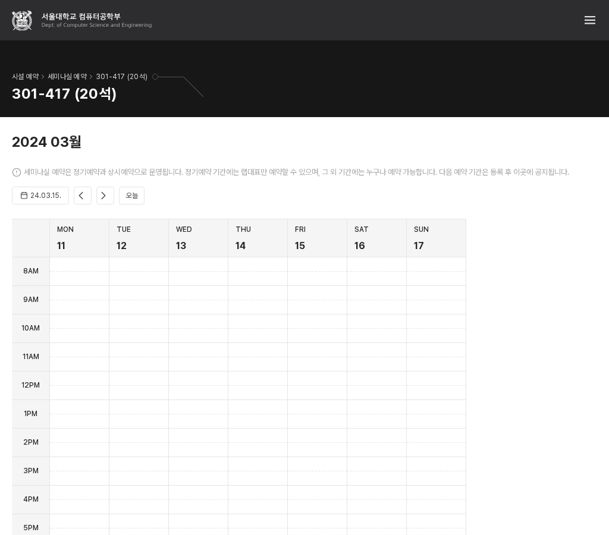
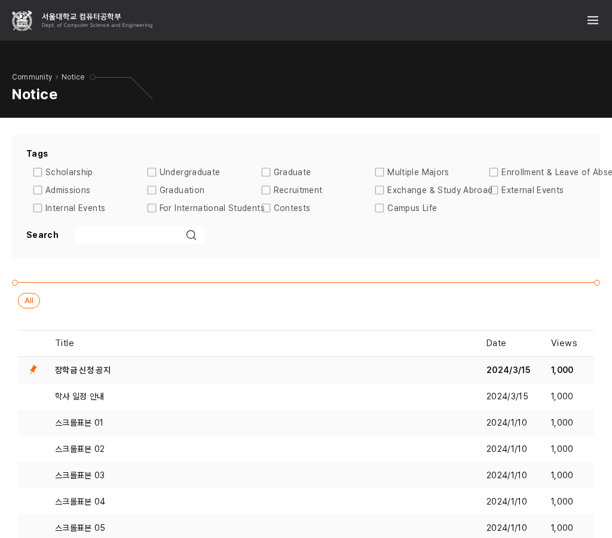
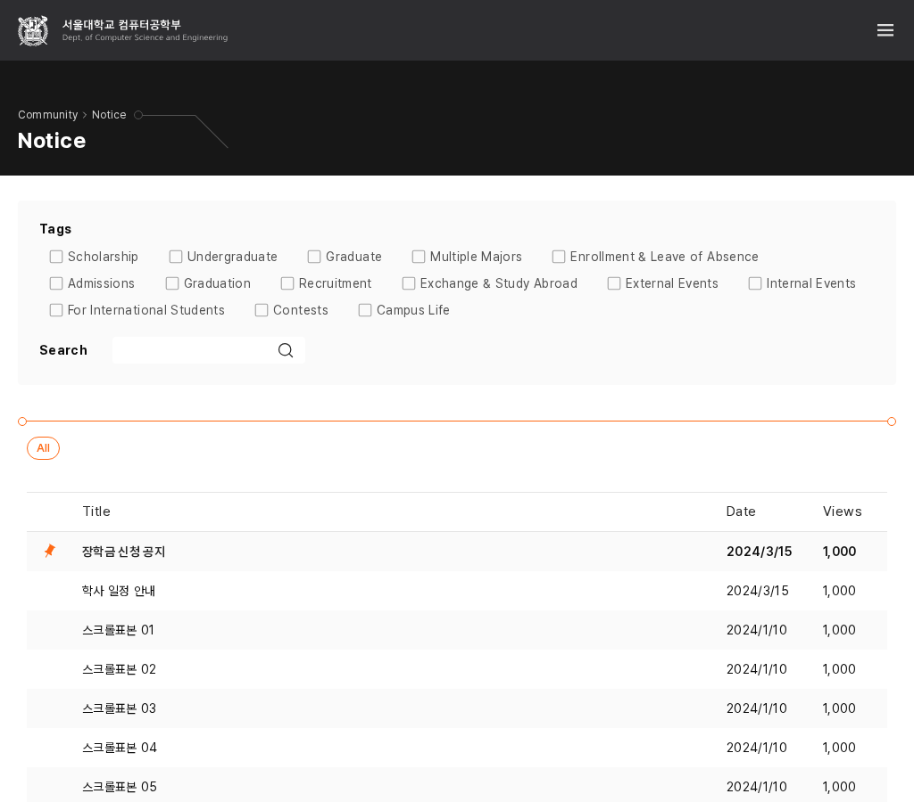

긴 선택 항목이 겹치지 않도록
비교안 · 앱 미적용먼저, B안의 실제 적용 결과
DS-023: 공통 탐색은 1200px, 교과목·예약은 1024px에서 전환한다. 1024px 예약은 상단 메뉴와 기존 7일 달력을 함께 사용한다. 소개 책자의 기존 가로 배치처럼 들어가는 콘텐츠는 유지한다.
승인한 한·영 중간 폭 이미지 12장이 일치했다. 기존 모바일 390px·데스크톱 1280px의 36장 전체 페이지 이미지도 직전 버전과 같았다. 메뉴·달력 이동·보기 전환을 확인했다. 실제 적용 전체 보기.
실제 적용된 1024px 예약 펼치기

1. 메인 필터 · 들어가지 않는 항목은 다음 줄로
영어 390px에서 선택 항목을 한 줄로 고정해 문서가 420px로 늘어난다. 기존 버전에서도 같은 문제다. 모양과 글자는 유지하고, 공간이 부족할 때만 항목을 줄바꿈하는 안이다. 영역 높이는 늘어나지만 모든 항목이 화면 안에 보인다.
2. 공지 태그 · 열 정렬을 유지할까?
현재 열의 최소 폭은 160px, 가장 긴 영어 항목은 약 237px다. 1024px에서는 오른쪽으로 넘치고, 768·1280px에서도 항목끼리 겹친다. 글자를 줄이지 않고 필요한 공간을 확보하는 두 안이다.
현재 태그의 넘침·겹침 보기

원본 크기
B · 항목 길이에 맞춰 배치
각 항목이 필요한 폭만 쓰고 다음 항목을 이어 배치한다. 더 조밀하지만 줄마다 시작 위치가 달라지고 한국어 배열도 바뀐다.

원본 크기A 추천 이유: 기존의 열 정렬을 보존하면서 겹침의 원인만 조정한다. 240px는 현재 최장 항목 약 237px를 담기 위한 비교값이며 모든 선택 컨트롤의 새 공통 폭은 아니다. B는 밀도를 더 유지하지만 정렬 방식이 바뀐다.
비교의 범위
한·영 메인 3개 폭, 공지 4개 폭에서 실제 앱의 배치 스타일만 임시 변경했다. 문서 폭·항목 경계 겹침을 측정했다. 앱 소스에는 아직 적용하지 않았고, 승인 후 공유 사용처·선택 상태·키보드·필터 실행을 확인한다.
이번 판단 · L-Q3
메인 필터는 부족할 때 줄바꿈하고, 공지 태그는 A처럼 기존 열 정렬을 유지하는 방향으로 진행할까? 더 조밀한 공지 태그 배치를 원하면 B를 선택할 수 있다.